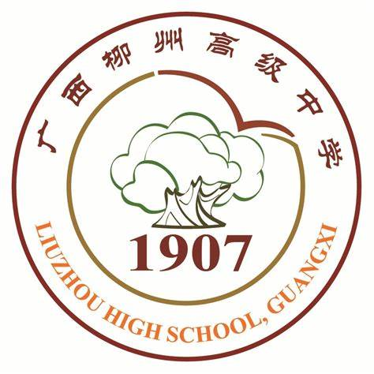

| 广西柳州高级中学 | ||||
| 首页 | 校风 | 校园风光 | 学习之校 | 更多 |
| 柳州高中始建于1907年，是柳州最早官办学堂，广西首批重点中学和首批示范性普通高中。 学校现有教职工总数541人，其中博士2人，特级教师7人，正高级教师3人，高级教师136人，研究生以上学历教师187人，拥有一支高素质、高水平的教师队伍。学校的教育教学成绩一直名列广西前茅。2015年以来，学校录取清华大学、北京大学、香港大学、香港中文大学及国外知名院校（世界排名前100名）165人。十年来，柳州市获得的数学、物理、化学、生物、信息五大学科竞赛全国决赛金牌的学生全部出自我校。 | ||||
|  | 柳高校整体为圆形。校徽上方和下方分别是学校的中文名与英文名； 校徽内有一个圆，圆的部分被“v”字代替，“v”形如翱翔的飞鸟，象征志在远方的拼搏精神； 内圆中有柳高的标志——古榕，以及柳高成立年份，表现柳高根源深远 。 |
|||
| 校歌：《柳高之歌》 | ||||
校训是：长夜临光，不畏苦暗！ 校训是： 全面发展 勤奋学习 严格要求 实事求是！ |
||||